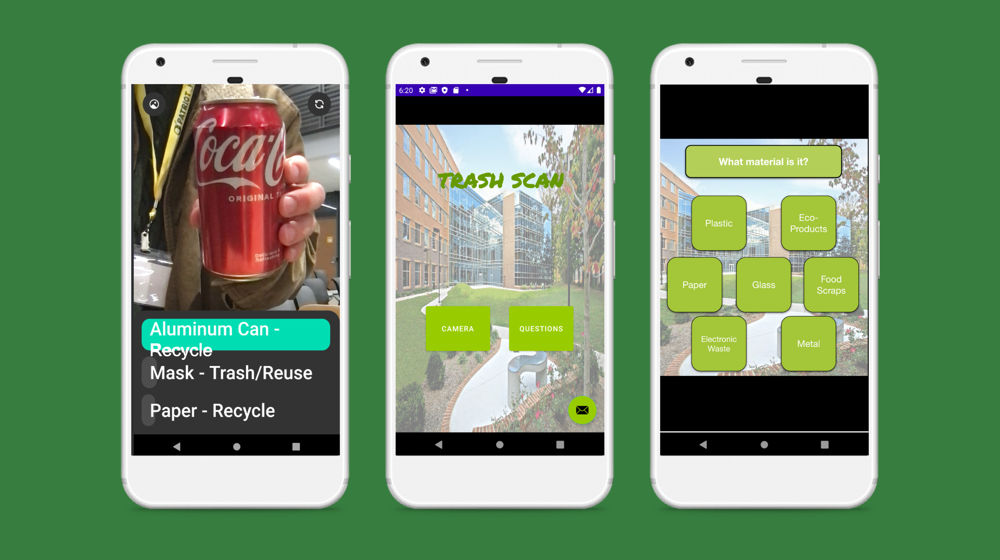

Trash sCan
Its not always easy to know which bin to dispose of your waste in. Mason Trash sCan can help! This app uses a machine learning algorithm to identify waste and help users with sorting at the bin!
Inspiration
1 in 4 items placed in recycling bins should be thrown in the trash. Often, this will cause entire bags of recycling to be thrown out due to contamination. More so, the Environmental Protection Agency has data to show 75% of waste is recyclable, yet only a bit more than 33% is. A 2017 Scrap Recycling Industries survey had 28% of participants admit to being confused about recycling.
We all share the same home, this is an issue that humanity must unite to solve together.
We wanted to find a solution to this problem that could be implemented right here at Mason using fun new technologies. This was the inspiration for Mason Trash sCan.
What it does
Mason Trash sCan is an Android application that uses a machine learning algorithm along with the device's camera to scan users' waste and help them identify which bin to throw it in! We know that it's not always easy to know where your waste should go. Trash? Recycle? Compost? Our app aims to make waste less wasteful and more fun! For users who would rather not use their camera, there is also a non-image way to identify waste via a quick question quiz.
How we built it
We built the machine learning portion of the app using Lobe, an open source Microsoft tool that we exported into our app using their documentation on GitHub to use with Bootstrap. The machine learning algorithm was trained by us to recognize various types of waste. The rest of the project was built entirely in Android Studio by us with lots and lots of trial and error.
Challenges we ran into
There were three big challenges that we ran into. The first being linking the camera page of the app with the main page of the app, and the second being setting up the machine learning algorithm. Ultimately, for the first challenge, we had to solve this by making two separate apps that link together via a button in the home app. For the second challenge, we had to solve this by only exporting three of the detections we taught the machine learning algorithm.
The third big challenge we ran into was simply time management. We did not account for learning curves in our timelines and had to cut a lot from the final product in the end. We wish we could have added some functionality between the app and waste bins themselves as well as some more functionality involving the results of the waste identification. Also, we wish we could have finished programming the questions portion!
Accomplishments that we're proud of
One of our group members had no programming experience before this weekend. Another group member was taking his first programming classes this semester. As a team composed partially of beginners, and partially of students halfway through their undergraduate degrees, we decided to start on this project in a place where we would all be learning something entirely new. This was the first time any of us had developed an Android app, and the first time any of us had submitted a hackathon project! We are so proud of how far we've come and how much we bonded.
What we learned
We all gained an understanding of the fundamentals of Android Studio as well as some basic Kotlin (as well as Java for some of us!). We all also learned how to use Lobe, and gained a good grasp on training machine learning algorithms. Half of us learned the basics of and used git and GitHub for the first time too!
What's next for Mason Trash sCan
We hope to see this prototype become a more complete product as both an iPhone and Android app. We hope to not just see it at Mason, but also at colleges and other places around the globe.